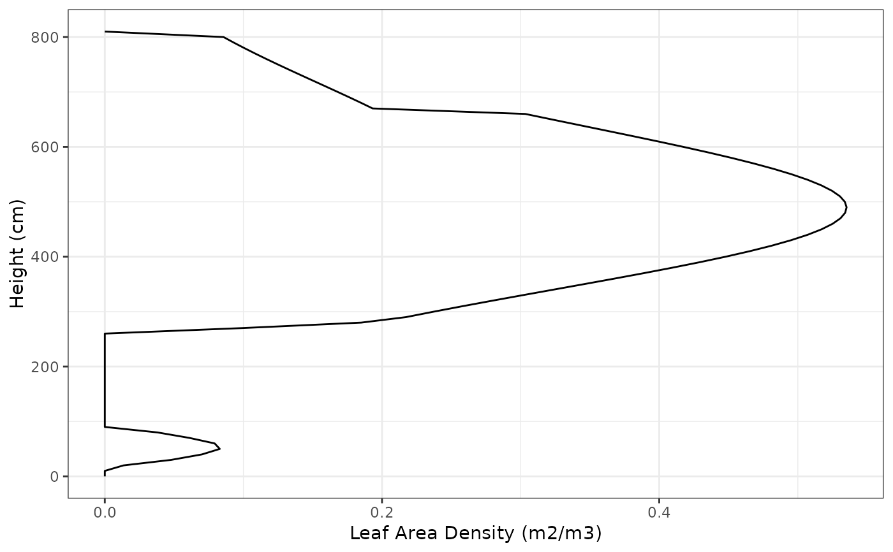
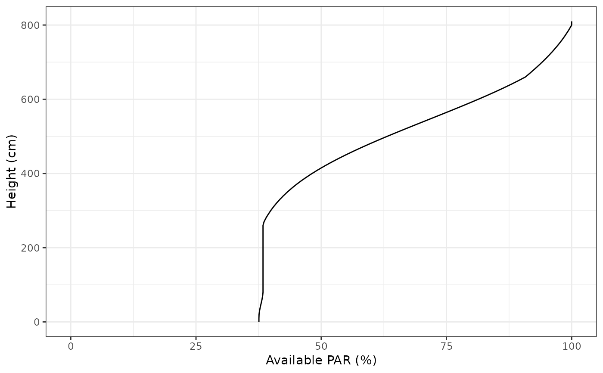
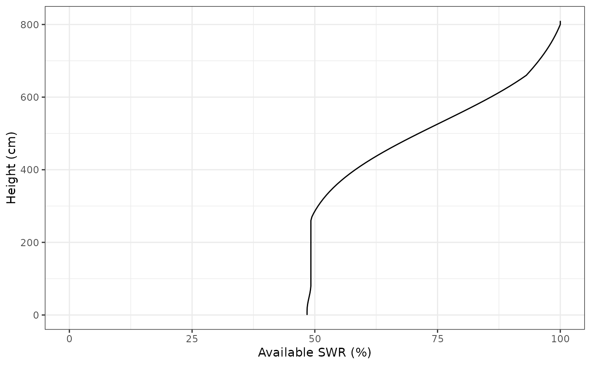
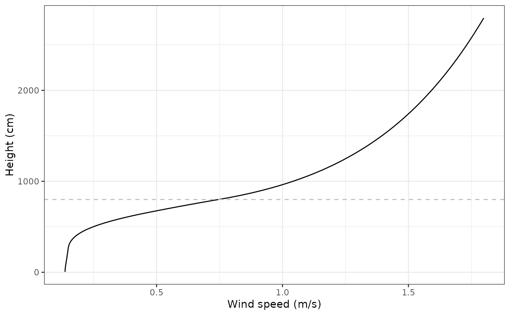
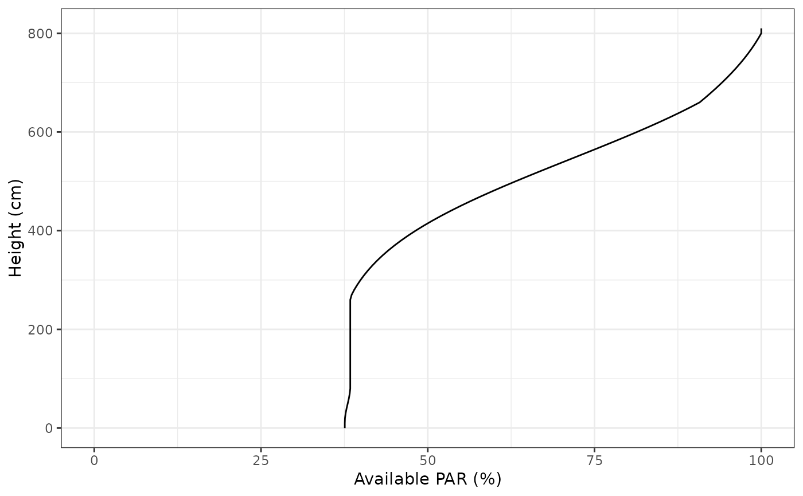
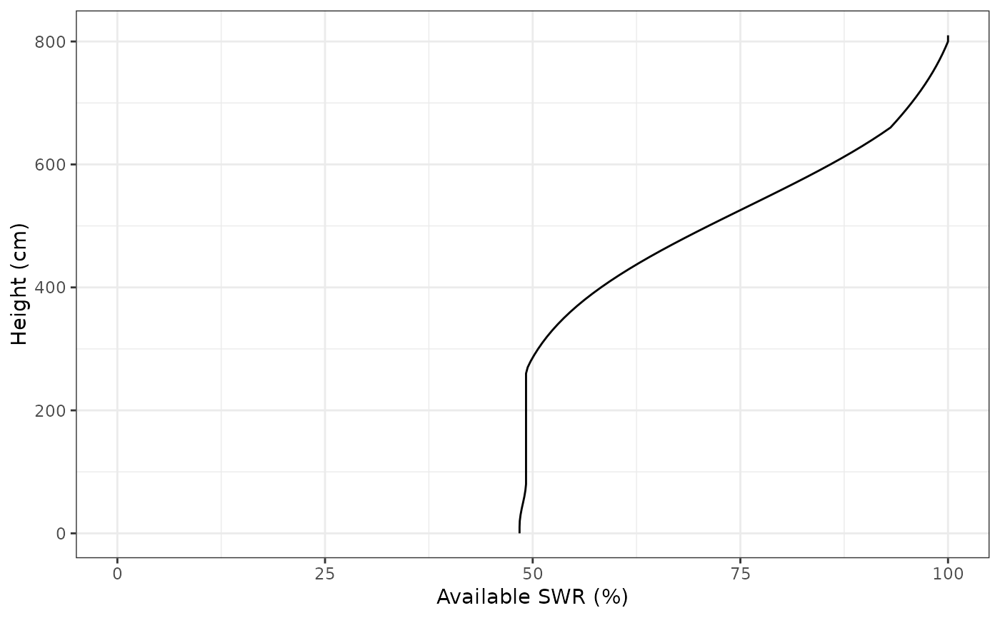
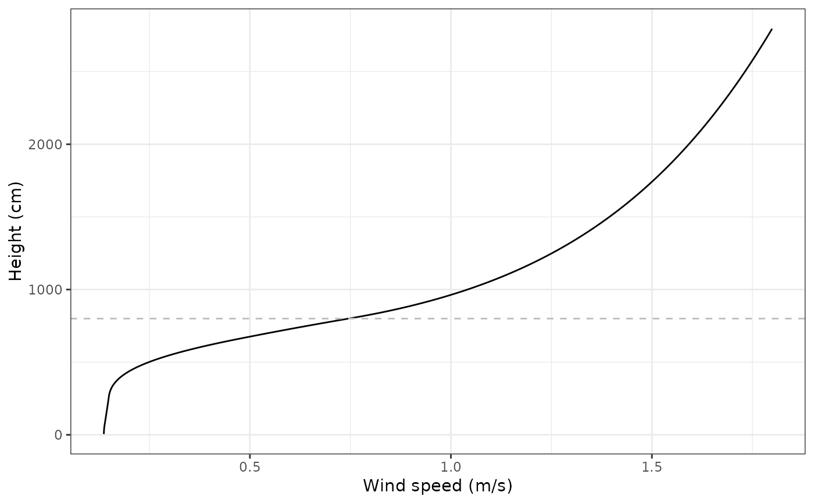

Vertical profiles
VerticalProfiles.RdFunctions to generate vertical profiles generated by an input forest object.
vprofile_leafAreaDensity(x, SpParams = NULL, z = NULL, gdd = NA, mode = "MED",
byCohorts = FALSE, bySpecies = FALSE, draw = TRUE,
xlim = NULL)
vprofile_rootDistribution(x, SpParams, d = NULL, bySpecies = FALSE, draw = TRUE,
xlim = NULL)
vprofile_fuelBulkDensity(x, SpParams, z = NULL, gdd = NA, mode = "MED",
draw = TRUE, xlim = NULL)
vprofile_PARExtinction(x, SpParams, z = NULL, gdd = NA, mode = "MED",
draw = TRUE, xlim = c(0,100))
vprofile_SWRExtinction(x, SpParams, z = NULL, gdd = NA, mode = "MED",
draw = TRUE, xlim = c(0,100))
vprofile_windExtinction(x, SpParams, u = 1, windMeasurementHeight = 200,
boundaryLayerSize = 2000, target = "windspeed",
z = NULL, gdd = NA, mode = "MED",
draw = TRUE, xlim = NULL)Arguments
- x
An object of class
forest- SpParams
A data frame with species parameters (see
SpParamsMED).- z
A numeric vector with height values.
- d
A numeric vector with soil layer widths.
- gdd
Growth degree days.
- mode
Calculation mode, either "MED" or "US".
- byCohorts
Separate profiles for each cohort.
- bySpecies
Aggregate cohort profiles by species.
- u
The value of measured wind speed (in m/s).
- windMeasurementHeight
Height corresponding to wind measurement (in cm over the canopy).
- boundaryLayerSize
Size of the boundary layer (in cm) over the canopy.
- target
Wind property to draw, either "windspeed", "kineticenergy" (turbulent kinetic energy) or "stress" (Reynold's stress).
- draw
Logical flag to indicate that a plot is desired.
- xlim
Limits of the x-axis.
Value
A numeric vector with values measured at each height. Units depend on the profile function:
vprofile_leafAreaDensity: Cumulative LAI (m2/m2) per height bin.vprofile_fuelBulkDensity: Fuel bulk density (kg/m3) per height bin.vprofile_PARExtinction: Percent of photosynthetically active radiation (%) corresponding to each height.vprofile_SWRExtinction: Percent of shortwave radiation (%) corresponding to each height.vprofile_windExtinction: Wind speed (m/s) corresponding to each height.
See also
Examples
#Default species parameterization
data(SpParamsMED)
#Load example plot plant data
data(exampleforestMED)
vprofile_leafAreaDensity(exampleforestMED, SpParamsMED)

vprofile_fuelBulkDensity(exampleforestMED, SpParamsMED)
 vprofile_PARExtinction(exampleforestMED, SpParamsMED)

vprofile_SWRExtinction(exampleforestMED, SpParamsMED)

vprofile_windExtinction(exampleforestMED, SpParamsMED)

vprofile_PARExtinction(exampleforestMED, SpParamsMED)

vprofile_SWRExtinction(exampleforestMED, SpParamsMED)

vprofile_windExtinction(exampleforestMED, SpParamsMED)
